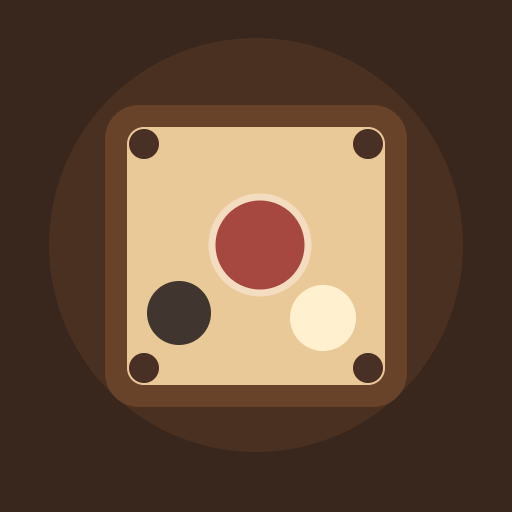

<- all projects

Carrom Courtyard
PC
Volume
Live
A table. A thoughtful shot.
Pull up a seat at Carrom Courtyard, the classic Indian tabletop game with real physics. Place your striker on the bottom rail, pull it back and flick your pieces into the pockets on a warm wooden board, banking shots off the cushions to reach pieces you cannot hit straight. Learn the queen-and-cover rule through 50 shot puzzles in five chapters, each solved for real on the physics board before it shipped. Then play full matches against the computer on easy, medium or hard, or take turns with a friend. Win coins to restore the neighbourhood club and collect six striker finishes.